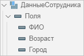
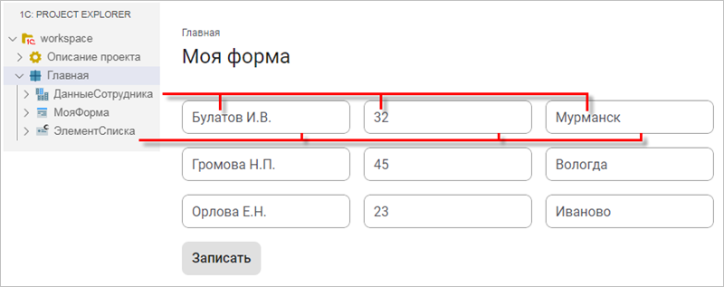

Элемент проекта вида «Структура» для описания данных в интерфейсе
Чтобы описать данные, которые нужно показывать и редактировать в интерфейсе, можно использовать элементы проекта вида Структура (подробнее).
Структура в проекте это описание типа, имеющего фиксированный набор полей.

Пример использования структуры в интерфейсе может выглядеть следующим образом:

Есть форма, которая показывает список сотрудников: ФИО, возраст и город. Эта информация о сотрудниках не хранится в базе данных приложения, она получается или вычисляется некоторым образом.
Форма содержит произвольный список, который состоит из элементов, описанных в проекте как ЭлементСписка. То есть ЭлементСписка — это три поля ввода, расположенные горизонтально.
Чтобы описать данные, которые содержатся в одной строке списка, в проект добавлена структура ДанныеСотрудника. То есть "Булатов И.В.", "32" и "Мурманск" — это данные одного объекта, имеющего тип ДанныеСотрудника. Произвольный список, находящийся в форме, содержит массив таких объектов в своем свойстве Источник.
Форма и список
Форма выглядит следующим образом:
ВидЭлемента: КомпонентИнтерфейса
ОбластьВидимости: Подсистема
Ид: 490ac0b2-b4e9-42e7-99a7-07b318bbe261
Имя: МояФорма
Наследует:
Тип: Форма
ПослеСоздания: ПослеСоздания
ВключатьВАвтоИнтерфейс: Истина
Содержимое:
Тип: ОбычнаяГруппа
Содержимое:
-
Тип: ПроизвольныйСписок
Имя: СписокСотрудников
КомпонентЭлементаСписка: ЭлементСписка
Контейнер:
Тип: ОбычнаяГруппа
Источник:
Тип: ИсточникДанныхМассив
-
Тип: Кнопка
Заголовок: Записать
ПриНажатии: ЗаписатьРезультат - Компонент элемента списка — это компонент интерфейса с именем ЭлементСписка. Он связывает данные и элементы интерфейса, в которых эти данные показываются и редактируются;
- Тип источника данных списка — ИсточникДанныхМассив. Источник будет заполнен данными с помощью встроенного языка.
Структура «ДанныеСотрудника»
Структура ДанныеСотрудника выглядит следующим образом:
ВидЭлемента: Структура
ОбластьВидимости: Подсистема
Ид: 3cc44843-e496-4d2e-8360-50d35ec258a8
Имя: ДанныеСотрудника
Поля:
-
Тип: Строка
Имя: ФИО
-
Тип: Число
Имя: Возраст
-
Тип: Строка
Имя: ГородОна описывает три поля, в которых будут находиться данные для одной строки списка.
Заполнение списка данными
Самый простой способ заполнить список данными — в обработчике события формы ПослеСоздания:
метод ПослеСоздания()
знч Сотрудник1 = новый ДанныеСотрудника()
Сотрудник1.ФИО = "Булатов И.В."
Сотрудник1.Возраст = 32
Сотрудник1.Город = "Мурманск"
(Компоненты.СписокСотрудников.Источник как ИсточникДанныхМассив).Данные.Добавить(Сотрудник1)
знч Сотрудник2 = новый ДанныеСотрудника()
Сотрудник2.ФИО = "Громова Н.П."
Сотрудник2.Возраст = 45
Сотрудник2.Город = "Вологда"
(Компоненты.СписокСотрудников.Источник как ИсточникДанныхМассив).Данные.Добавить(Сотрудник2)
знч Сотрудник3 = новый ДанныеСотрудника()
Сотрудник3.ФИО = "Орлова Е.Н."
Сотрудник3.Возраст = 23
Сотрудник3.Город = "Иваново"
(Компоненты.СписокСотрудников.Источник как ИсточникДанныхМассив).Данные.Добавить(Сотрудник3)
;Сначала создается объект типа ДанныеСотрудника (это тип структуры, описанной в проекте). Заполняются его поля: ФИО, Возраст и Город. После этого объект добавляется в массив источника данных списка. И так для каждой строки списка.
В результате параметр ДанныеЭлемента, который вы можете использовать для указания свойств компонентов (подробнее), будет иметь тип структуры, то есть ДанныеСотрудника. Это понадобится для связывания данных и интерфейса, которое описано далее.
Связь данных с интерфейсом
Произвольный элемент списка ЭлементСписка выглядит следующим образом:
ВидЭлемента: КомпонентИнтерфейса
ОбластьВидимости: Подсистема
Ид: d78f5166-ddff-41de-9c84-1f28712dae5c
Имя: ЭлементСписка
Наследует:
Тип: ПроизвольныйЭлементСписка
Содержимое:
Тип: ОбычнаяГруппа
Ориентация: Горизонтальная
Содержимое:
-
Тип: ПолеВвода
ДопустимыеТипы: [Строка]
Имя: ФИО
Значение: =ДанныеЭлемента.ФИО
-
Тип: ПолеВвода
ДопустимыеТипы: [Число]
Имя: Возраст
Значение: =ДанныеЭлемента.Возраст
-
Тип: ПолеВвода
ДопустимыеТипы: [Строка]
Имя: Город
Значение: =ДанныеЭлемента.Город Данные, содержащиеся в источнике списка, используются здесь как значения полей ввода. То есть они будут показаны на экране и пользователь сможет их изменить.
Поскольку свойства экземпляров компонентов интерфейса не только вычисляемые, но и наблюдаемые, значения, измененные пользователем, окажутся в источнике данных списка. Для того, чтобы сохранить или передать их, достаточно обойти этот массив данных:
метод ЗаписатьРезультат()
для СотрудникОбъект из (Компоненты.СписокСотрудников.Источник как ИсточникДанныхМассив).Данные
знч Сотрудник = СотрудникОбъект как ДанныеСотрудника
пер ФИОСотрудника = Сотрудник.ФИО
пер ВозрастСотрудника = Сотрудник.Возраст
пер ГородСотрудника = Сотрудник.Город
;
;